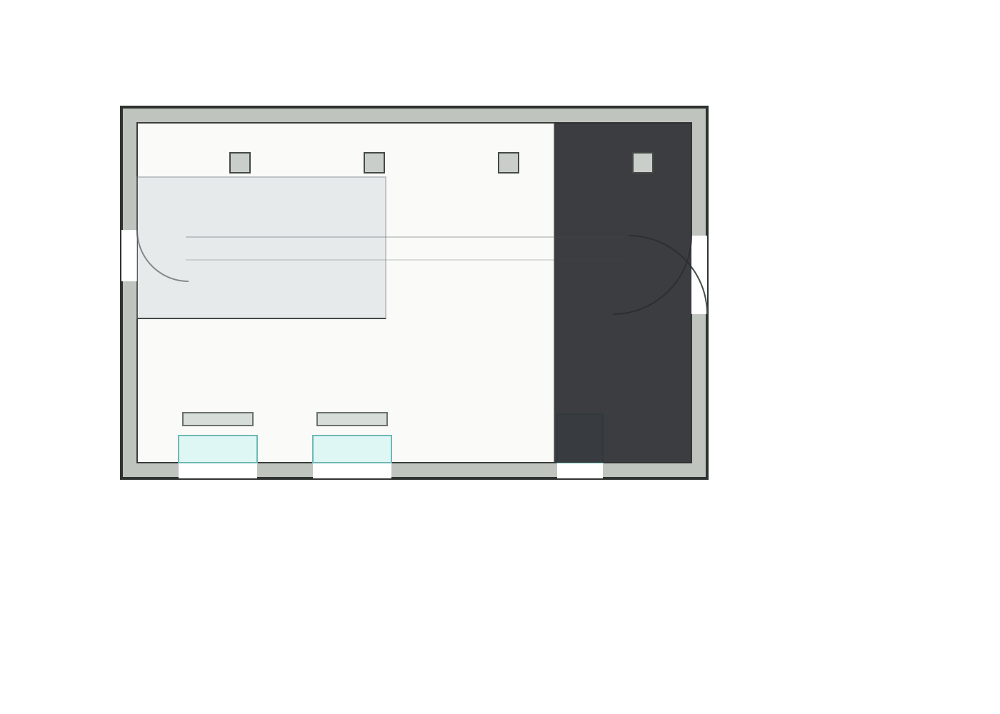
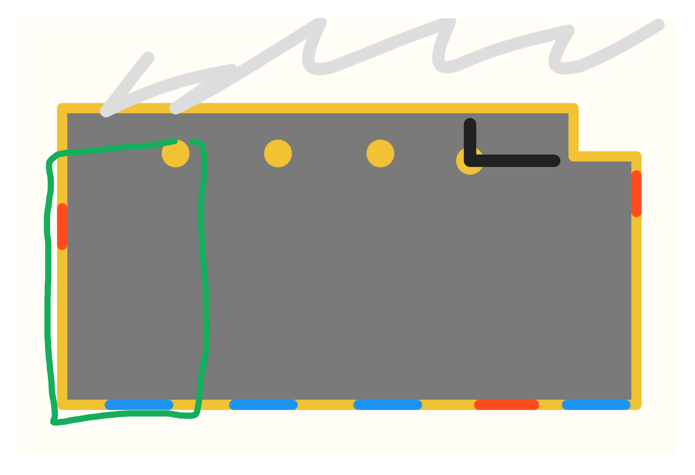

{kind=link}
{kind=link}
Композиция сцены
- Тяжелый прямоугольный деревянный стол.
- Скамьи по длинным сторонам и по торцам.
- Сборка мизансцены вокруг центральной трапезы.
Location 03
Отдельный подлендинг по главному залу: референсы пространства, схема помещения, пустые проходы без стола и серия приближения к столу собраны в самостоятельную ветку просмотра.
Внутри страницы
Location 03
Это не гостиная в бытовом смысле, а основной зал вампиров: место общего плана, стола, композиции как у темной трапезы и атмосферы скромного, но вычурного богатства.


Location 03 Hall
Вид сверху на основной зал, собранный как рабочая карта помещения для обсуждения расстановки, проходов и общей геометрии локации.

Location 03 Hall
Та часть плана, которая видна на втором кадре из блока Main Hall of Vampires, выделена зелёным. Дальше концентрируемся на этой области.

Hall Base
Перед серией приближения оставляем два чистых прохода того же кадра вообще без стола: более нейтральный clean plate и более атмосферный пустой вариант в той же архитектуре.


Hall Props
Ниже вынесена реальная фотография комода, который берем как прямой референс для зала: резной, деревянный, с четырьмя ящиками, латунными ручками и более бытовой мебельной логикой, чем у прежних неподходящих деревянных фрагментов.

Hall Output
Это отдельный проход по пустому кадру без стола: на место скамейки слева поставлен именно этот комод. В текущей версии он уже придвинут к левой стенке и развернут так, чтобы ящики смотрели вправо, в сторону комнаты, и сам комод уже совсем смелее подан к зрителю.

Hall Output
Ниже собрана вся рабочая линейка по одному и тому же кадру
hall-8339-table-only: мы не меняем комнату и не
пересобираем сцену, а только шаг за шагом двигаем стол ближе к
камере.
Это полезно как наглядная шкала для выбора нужной степени давления переднего плана: от более сдержанного варианта до агрессивного приближения, где стол уже начинает доминировать в композиции.

Hall Output
Ниже собрана тройка комбинированных проходов, где в столовые версии `v4`, `v5` и `v6` уже поставлен этот комод у левой стены. Так можно сразу сравнить, как меняется баланс между передним планом стола и комодом напротив.